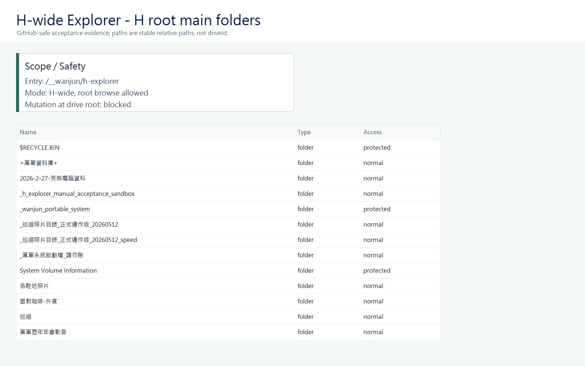
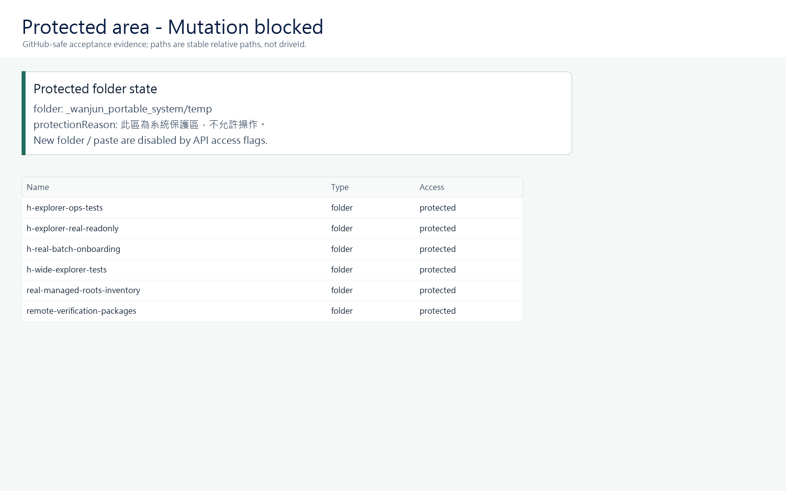
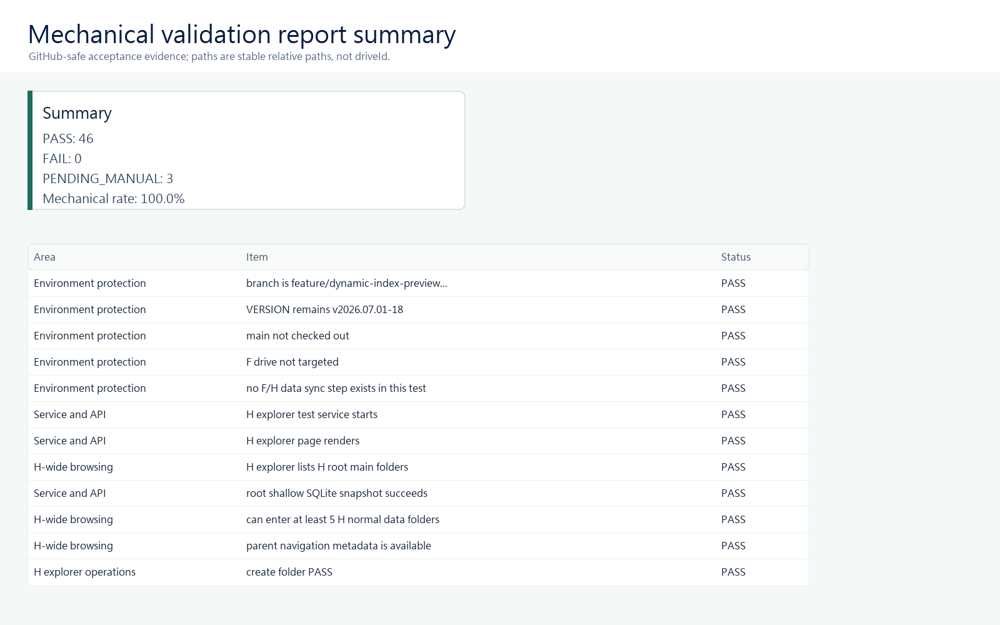
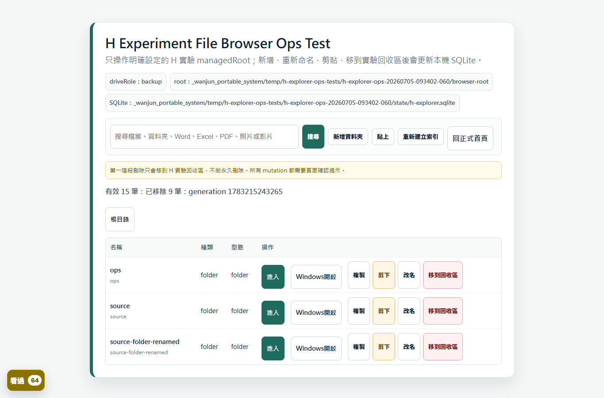

F 狀態
冷凍穩定基準
保持 v2026.07.01-18，不部署 H 實驗功能。
手機優先的 GitHub-safe 狀態看板。最新消息與過去紀錄分開看。
GitHub-safe Project Dashboard
這個網站是 GitHub-safe 的公開專案報告，不是正式資料庫本體。它整理 ChatGPT / Codex 協作摘要，讓使用者用手機掌握 F、H、GitHub、Codex 與 Dashboard 狀態。
保持 v2026.07.01-18，不部署 H 實驗功能。
後台組織與主分類已對齊 H 實體架構；SQLite、搜尋與路徑安全測試通過。
GitHub 只保存程式、文件與報告，不同步 5TB 原始資料。
main 不升版、不合併實驗功能；公開看板只放安全摘要。
只放目前最需要知道的狀態；過去細節請切到「過去紀錄」。
H 實驗線已把窗口行政上架流程調整為兩層選擇：先選主組織，再顯示該組織已驗證的主分類。介面名稱與硬碟實體名稱由程式安全對應，使用者不需要記住實體資料夾命名；另保留可選的安全子資料夾欄位。
上架 API、窗口行政 SQLite 與搜尋 API 已同步保存主組織、主分類與子路徑。組織與分類錯配、絕對路徑、磁碟代號及越界路徑會被拒絕，待上架原檔保持原位；舊的年份優先上架紀錄仍可搜尋，不會自動搬動。
Python 單元測試與完整 temp 整合測試均通過，H 程式副本也已用 SHA-256 核對一致。這仍是 feature 實驗線，必須重新啟動 H 服務並完成人工上架驗收後，才可討論正式發布。
F 保持冷凍、main 未合併、VERSION 維持 v2026.07.01-18，未做 F/H 原始資料同步，也未修改正式根目錄 BAT。
H 實驗線已新增窗口行政專用索引器，收錄穩定相對路徑、年份、行政分類、活動標籤、檔名、副檔名與建立時間。窗口既有靜態頁維持原本 HTML 外觀，由本機服務注入搜尋與分類抽屜；Word、PDF、PSD 等非照片檔會顯示正確檔案圖示，不再以破圖呈現。
後台分類面板已加入「專案／活動」欄位，並依資料庫自動切換：歷史影像顯示國家、年份、月份與活動；窗口行政只顯示行政分類、年份與活動。另已解鎖「重新整理現有前台資料」，可在背景依序重建照片與窗口索引，失敗時保留上一個可用 SQLite。
H 實機完整照片索引共掃描 464,251 筆，照片階段約 115.6 秒，整體約 132.4 秒，錯誤 0。測試當下「已上架窗口行政資料」尚無檔案，因此窗口索引為 0 筆，這不是索引失敗；仍需人工上架一筆 Office／PDF／PSD，確認窗口頁搜尋、圖示與 Windows 實際開啟。
範圍仍限 H 實驗線：F 未碰、main 未合併、VERSION 仍為 v2026.07.01-18、未做 F/H 原始資料同步，也尚未宣稱正式上線。
使用者現場指出：尼泊爾 2026 頁上傳一個檔案後，看起來出現兩個格子。診斷確認硬碟與 SQLite 都只有一筆，重複來自前台同時把「月份／相簿摘要」和「實際檔案」畫成同款卡片。
feature 線已把月份／相簿改為精簡段落導覽，只有實際檔案使用內容卡。整合測試與 H 實機頁確認：指定檔案卡 1、distinct item 1、重複相對路徑 0、舊資料夾摘要卡 0。照片與窗口行政資料都維持一個檔案對應一筆上架紀錄。
後台最近上架成功紀錄預設只顯示 5 筆，可展開最近 32 筆，避免長期使用後頁面持續拉長。另一顆硬碟尚未同步；任何整碟資料複製前，必須先確認永久硬碟身分、來源／目的與唯讀 dry-run 差異清單，再由使用者人工批准。
使用者現場指出：尼泊爾 2026 的 07 月資料已刪除，前台仍留下 0 筆卡片，並出現「月份待確認 / 2026」與「月份待確認 / country_year」等錯誤空框。根因有兩部分：索引只移除單一路徑，沒有完整處理資料夾子樹；分類查詢也沒有排除檔案數為 0 的群組。
feature 線已建立一致性規則：上架會索引整個資料夾子樹；重新命名會移除舊路徑並建立新路徑；移到安全回收區會將原路徑與子項目標記移除；前台只顯示仍有有效檔案的年份、國家、月份與活動卡片。H 實機頁已確認只保留有內容的「01月 / 尼泊爾」，空白 07 月與兩個錯誤待確認卡片均已消失。
同次修正啟動器的舊服務判斷：健康檢查現在回報服務啟動時載入的程式指紋，並以檔案更新時間作備援，避免同版號更新後仍由舊 Python 服務提供舊畫面。照片整合測試、Watcher 測試與動態預覽測試皆通過。範圍仍限 H 實驗線；窗口行政正式前台尚未完成全站動態整合，不能稱為完整後台正式上線。
使用者現場校正：窗口行政資料庫上架成功後，只看到「窗口前台確認」仍不夠，因為那像是一張獨立驗收卡；真正需要的是能進到「窗口前台式」的位置畫面，看到該筆資料位在同一層資料夾清單中。
feature 線已新增 H-only 路由 /window/__published-location，最近上架紀錄與確認卡會出現「查看窗口前台位置 / 在窗口前台位置查看」。此頁會用窗口行政資料庫的前台風格顯示目前資料夾、同層檔案、縮圖與本次上架標記，讓使用者不用自己去硬碟裡翻找。
重要邊界：這是窗口行政上架後的前台位置橋接頁，還不是正式窗口行政資料庫全站動態發布完成。舊紀錄若實體檔已不存在，就無法回看該位置；下一次重新上架窗口資料後會看到新按鈕。F 未碰、main 未合併、VERSION 未升版、未做 F/H 原始資料同步。
使用者現場回報：窗口行政資料庫上架 PNG 後，後台最近上架紀錄已出現「查看上傳成功畫面」，但前台確認頁右側仍只顯示 PNG 方塊，無法直接用眼睛確認圖片內容。
診斷結果：檔案已成功上架，圖片端點也可讀取；問題在窗口行政前台確認頁沒有針對圖片檔產生預覽，只把它當一般檔案類型顯示。feature 線已修正為圖片檔顯示實際縮圖，非圖片才保留檔案類型方塊。
驗證：H 實驗服務已重啟，新確認頁包含圖片預覽元件，圖片端點回應 image/png。F 未碰、main 未合併、VERSION 未升版、未做 F/H 原始資料同步，也沒有提交 SQLite、logs、runtime、temp、截圖或正式資料。
使用者現場指出：H 後台最近上架成功紀錄仍只看到「開啟硬碟資料」「開啟所在資料夾」「回窗口前台」，沒有可以直接證明瀏覽器前台成功的按鈕。診斷確認有兩個原因：第一，同版號 hotfix 時 H 已更新檔案但舊 Python 服務仍在跑；第二，部分舊上架 log 的資料庫欄位有亂碼或舊值，導致系統沒有判斷出它是窗口行政資料庫。
修正後，啟動器會用 server 檔案指紋判斷是否需要重啟服務，即使 VERSION 仍是 v2026.07.01-18 也會換成新程式；最近上架紀錄會優先用已上架相對路徑判斷資料庫類型，窗口行政資料庫紀錄應顯示「查看上傳成功畫面」，並連到 `/window/__published` 的瀏覽器前台確認頁。
現場校正：如果紀錄已被移到上架回收區，後台會正常不再顯示該筆；修正後需重新上架一筆窗口行政資料，才能看到新的成功畫面按鈕。F 未碰、main 未合併、VERSION 未升版、未做 F/H 原始資料同步，也沒有提交 SQLite、logs、runtime、temp 或正式資料。
使用者指出：最近上架成功紀錄裡，窗口行政資料庫只看到「開啟硬碟資料」「開啟所在資料夾」「回窗口前台」，仍然不容易證明瀏覽器前台成功。feature 線已調整操作順序：歷史影像、窗口行政資料庫與素材文件都先顯示「查看上傳成功畫面」，再顯示硬碟動作。
同次補強：若舊上架 log 的資料庫欄位不準，系統會從已上架相對路徑回推資料庫類型，讓窗口行政資料庫紀錄仍能補出成功畫面按鈕。F 未碰、main 未合併、VERSION 未升版、未做 F/H 原始資料同步。
使用者再次校正：開啟硬碟資料夾只能證明檔案在 H 裡，不等於前台成功。feature 線已把窗口行政資料庫與素材文件的非照片上架紀錄改為「查看前台確認頁」，用瀏覽器卡片顯示資料庫、年份、分類、檔名與狀態，避免只看到硬碟資料夾。
同次修正：後台選檔區不再像老式 HTML 控制項，改成萬軍風格的「選擇要上架的檔案」大按鈕，包含加號、支援檔案提示與已選檔名/數量回饋。
重要邊界：這仍不是正式窗口/素材前台完整動態化；它是 H 後台上架後的人眼確認頁。F 未碰、main 未合併、VERSION 未升版、未做 F/H 原始資料同步。
使用者實機上傳 PSD 到「窗口行政資料庫」後，檔案確實進入 H 的已上架資料區，但「回窗口前台」只回到窗口首頁，找不到剛剛上架的那筆資料，容易誤以為沒有發布成功。
feature 線新增「上架資料頁」：窗口行政資料庫與素材文件的最近上架紀錄會提供「查看上架資料頁」，可看到檔名、分類、年份、目前是否存在，並可開啟硬碟資料或所在資料夾。照片資料庫仍保留前台卡片檢查流程。
重要校正：窗口行政資料庫與素材文件的正式前台仍未完整動態化；目前這是 H 後台的安全回看頁，不代表正式窗口前台已完成發布整合。
使用者實機確認後台上架流程大致可用，但指出瀏覽器原生「選擇檔案」控制太老舊、不像萬軍系統介面。這次只調整 H-only 資料上架中心的上傳區視覺：改為較明顯的綠色按鈕，旁邊顯示尚未選擇、單一檔名或已選檔案數。
本次不改上架、分類、索引或前台資料邏輯；F 未碰、main 未合併、VERSION 未升版、未做 F/H 原始資料同步，也沒有提交 SQLite、logs、runtime、temp、截圖或正式資料。
使用者實機指出：後台已選南蘇丹、2026、07月並確認上架，但「按國家 → 南蘇丹」仍只到 2025。診斷確認檔案已進 H 已上架資料區，單筆 upsert 也有紀錄，但 photo SQLite 原本沒有把這筆標成南蘇丹，所以國家頁查不到。
修正後，後台上架到歷史影像資料庫時，索引器會直接採用已上架路徑中的國家層級作為 country_label，不再只靠檔名猜測。H 實機已重新 upsert 該筆南蘇丹 2026 資料，API 與舊國家頁都可看到 2026。
安全狀態：F 未碰、main 未合併、VERSION 未升版、未做 F/H 原始資料同步；本次只更新程式、測試、文件與 GitHub-safe 看板。
使用者提出更清楚的後台方向：資料先上傳到待上架區，再用按鈕選資料庫、國家/分類、年份、月份與相簿名稱，確認後才發布到前台。這次 feature 線已把後台待上架項目改成可操作的分類面板，支援自訂國家、年份、月份與相簿名稱。
同日補正：後台分類面板會隨資料庫切換。選歷史影像資料庫時只顯示照片國家/分類、年份、月份與相簿名稱；選窗口行政資料庫時只顯示行政資料夾與年份；選素材與文件時只顯示素材分類與年份。年份按鈕改為 2025 到 2035，避免每年都要手動補。
目前已完成的是 H-only 歷史影像資料庫上架流程：確認上架後，檔案會移到 H 的已上架資料區，並更新照片 SQLite，讓前台卡片可讀到。窗口行政資料庫與素材文件的正式前台發布、批次大量上架、OCR/照片內容辨識與整顆 H 自動同步仍未完成。F 未碰、main 未合併、VERSION 未升版、未做 F/H 原始資料同步。
使用者實機看到尼泊爾頁雖然已補出 2026，但排序變成 2025 後面接 1925、1948、1991、2026。runtime feature commit f46fd58 已修正：舊靜態年份卡片與新補入的動態年份會合併後依年份數字排序。
H 實機驗證結果：尼泊爾年份順序為 1925, 1948, 1991, 2009 ... 2024, 2025, 2026, 2058。未來若某國實際上架並索引到 2027，該國頁會自動補出 2027；沒有資料的國家不會硬塞空年份。F 未碰、main 未合併、VERSION 未升版、未做 F/H 原始資料同步。
使用者實機截圖指出：尼泊爾國家頁仍看不到 2026。原因是舊頁說明文字提到 2026，程式誤以為年度卡片已存在，所以沒有插入真正的 `__2026.html` 年度入口。
runtime feature commit 05970ec 已改成只認真正年度連結或年度卡片，不再把一般說明文字當成年度入口。H 實機驗證：尼泊爾國家頁已有真正 2026 入口，進入後也能看到 07 月份/資料夾層級。
使用者澄清需求：不是只要搜尋找到上架照片，而是前台正常路徑要成立，例如「按國家 → 尼泊爾 → 2026 → 07月資料夾 → 照片卡片」。
runtime feature commit 173a9fe 修正舊 country-year 動態備援頁：當舊 HTML 沒有該國 2026 頁面時，會先依月份與資料夾整理，再列出照片、影片與文件卡片。這仍是 H 實驗線功能，不代表整顆硬碟 watcher 或 F/H 同步完成。
使用者實機指出：點進尼泊爾、巴基斯坦等舊國家頁時，畫面被換成新的 SQLite 卡片頁，不是原本照片資料庫的版面。這次修正方向改為：既有 HTML 頁面如果存在，就保留原本外觀，不再整頁替換成工程感的動態頁。
修正後，按年份頁會在原版版面補上 2026 與 2027；單一國家頁只補該國已存在於 H photo SQLite 的新年份。真正不存在的 country-year 頁才會使用動態備援，讓後台新上架資料仍可被前台找到。
同次更新：後台「最近上架成功紀錄」預設收納為最近 8 筆，可按「顯示更多紀錄」展開，避免紀錄越來越長。這仍是 H 實驗線修正；F 未碰、main 未合併、VERSION 未升版、未做 F/H 原始資料同步。
使用者實機指出：後台上架後，前台卡片頁能看到新照片，但進入「按國家 → 尼泊爾」時年份仍只到 2025。這不是資料沒上架，而是舊靜態國家頁仍在顯示舊 HTML。
runtime feature commit：ceafa44。舊網址 2026整理_pages/countries/<國家>.html 與 2026整理_pages/country_year/<國家>/... 現在會讀 H 本機 photo SQLite 補出動態國家年份；?legacy=1 仍可回靜態備援。
同次修正：最近上架成功紀錄新增「重新命名」與「移到回收區」。移到回收區不是永久刪除，會同步把前台索引中的舊路徑標記移除。H 實機服務已重啟驗證：尼泊爾舊國家頁可看到 2026，後台頁可看到改名/回收操作。
仍未完成：整顆 H 自動同步、批次上架、行政/素材正式前台發布、F 更新。F 仍保持不動；main 未合併；VERSION 仍是 v2026.07.01-18。
使用者實機指出：從後台上架後查看前台卡片時，若結果頁把作業中的後台頁面帶走，容易關錯視窗；同時前台結果頁內的「按國家 / 按年份 / 搜尋」連結會跑到 /__wanjun/photo-index/... 而顯示找不到資料。
Runtime feature commit：73716dd。`確認上架到前台` 與「查看前台卡片」改為新分頁開啟；照片資料庫導覽與「看同年份 / 看同國家 / 用前台搜尋查看」改為根目錄連結，回到真正前台頁面。
速度修正：歷史影像資料上架後先做單筆 single-path-upsert，只把剛上架的項目寫進 H 本機 photo SQLite。H 實機驗證單筆索引只掃 1 筆，約 85ms；完整 refresh 仍保留作為失敗備援。這仍不是整顆 H 自動同步，也還不是批次發布完成。
使用者校正核心誤解：資料上架不是把檔案放到硬碟某個資料夾就結束，而是要能在照片資料庫前台看到新的格子、圖片與操作按鈕。這次補上 H-only 歷史影像資料的前台結果頁。
Runtime feature commit：f30a595。歷史影像資料庫項目上架成功後會導向 /__wanjun/photo-index/published?rel=...，用照片資料庫前台卡片樣式顯示剛上架的項目；上架紀錄也新增「查看前台卡片」。硬碟本體操作改名為「開啟硬碟資料 / 開啟所在資料夾」，避免混淆。
同時補強新上架資料的國家辨識：中文目的地資料夾「伊拉克」「科威特」「尼泊爾」會被標成對應國家，並保留 KD=伊拉克、KW=科威特規則。這仍是 H 實驗線，不碰 F、不做 F/H 原始資料同步、不升版、不合併 main。
使用者實機回報：資料似乎已成功上架，但後來不知道它去了哪裡，也不知道哪一頁可以回頭確認。這次補上 H-only 後台的結果追蹤。
Runtime feature commit：d9b3d6b。`/__wanjun/backoffice` 現在會顯示「最近上架成功紀錄」：每筆成功上架資料可看到資料庫、年份、國家/分類、月份、相對位置與目前是否存在，並提供「開啟上架資料」與「開啟所在資料夾」。
這是後台可追蹤性修正：不提交本機 log、不提交 SQLite、不碰 F、不做 F/H 原始資料同步、不升版、不合併 main。
使用者實機指出：上傳成功後，待上架清單雖然顯示系統建議與「待確認」，但那些看起來不是可操作按鈕，下一步不清楚。因此本次把 H-only 資料上架中心改成滿版後台卡片。
Runtime feature commit：910cd42。每筆待上架資料現在會顯示明確步驟：選資料庫、選國家或分類、選年份、選月份，最後按「確認上架到前台」。這次是介面可用性修正，不擴大 F、不升版、不合併 main，也不做 F/H 原始資料同步。
使用者提出關鍵建議：待上架資料旁邊的系統建議應該變成可點選的按鈕，例如資料庫、國家、年份與月份；確認後，檔案就應該移到相對應的資料夾，而不是只停在暫存區。
feature 線已加入第一版可操作流程：H 後台待上架清單現在可選「歷史影像資料庫 / 窗口行政資料庫 / 素材與文件」、國家/分類、年份與月份，按「確認上架」後會移到 H 的「萬軍已上架資料」。
目前接得最完整的是歷史影像資料庫：照片/影片上架後會觸發照片索引更新，讓前台能讀取已上架根目錄。窗口行政資料庫與素材文件目前先安全放到已上架區，正式前台發布仍待下一階段。
使用者希望 F/H 本機瀏覽器分頁不要再顯示 generic localhost 圖示。feature 線已加入共用 favicon：由 server 依硬碟角色產生圖示，讓資料中心、照片資料庫、窗口資料庫與後台分頁更容易辨識。
同時校正後台語意：目前「待上架資料夾」只是暫存水箱與分類建議，不等於資料已放到正確國家、年份或前台頁面。下一步必須做「選目的地、人工確認、預覽、發布到前台」流程。
使用者測試確認資料可以快速放入 H 的待上架資料夾後，下一個關鍵問題變成分類：新資料要進歷史影像資料庫、窗口行政資料庫，還是素材與文件？若進照片資料庫，還要判斷年份、國家、區域、月份與活動。
本次調整讓待上架清單顯示「系統建議」與「可選方向」：依檔名、資料夾名稱、副檔名與既有人工分類規則，先列出建議資料庫、建議位置、辨識度、原因，以及可選資料庫與年份。
這仍是審核層，不是正式發布。分類編輯與發布到前台仍鎖住，避免未確認資料直接進入正式照片資料庫或行政資料庫。
使用者確認第一版後台仍太像靜態說明頁，真正需求是網站 CMS 式後台：可以新增照片、影片、文件與音訊，先進入待上架區，再由系統辨識、人工確認，最後才發布到前台。
本次調整方向：H-only 後台提供「新增到待上架區」、「打開待上架資料夾」、「待上架清單」與初步辨識欄位。分類編輯與發布到前台仍鎖住，避免未確認資料直接污染照片資料庫或行政資料庫。
安全邊界不變：F 不碰、不做 F/H 原始資料同步、不升版、不提交原始資料、SQLite、logs、runtime、完整本機路徑或 secrets。
使用者現場指出：前台首頁沒有任何可進入後台的按鈕，因此無法理解要從哪裡更新資料。本次已在資料中心首頁的「快速工具」加入「資料上架中心」，並新增本機路由 `/__wanjun/backoffice` 作為後台入口第一版。
後台頁目前先提供清楚流程與現有照片索引更新入口：放入待上架資料、掃描新資料、系統預分類、人工確認、更新前台。真正「待上架資料」發布流程仍是下一階段，尚未開始搬動、改名、刪除或上架原始資料。
使用者重新定義最終需求：硬碟不是要變成複雜的瀏覽器版 Windows 檔案總管，而是像網站資料庫一樣保存原始資料；瀏覽器前台負責查找、瀏覽、開照片與文件；新增資料則應透過一個清楚、低學習成本的「資料上架中心」完成。
新的方向是 H-only 先行：F 保持穩定救生艇不動，H 作為實驗硬碟。第一版不做整顆 H watcher、不做複製剪下貼上、不把工程狀態放到照片資料庫主畫面，而是建立「待上架資料 → 掃描新資料 → 系統預分類 → 人工確認 → 更新前台」的上架流程。
介面原則：前台仍像照片資料庫與行政資料庫；後台入口可以叫「資料上架中心」，但不能顯示 SQLite、generation、managedRoot、watcher 等工程語言。目標是中老年使用者也能照著按鈕完成資料新增。
使用者實機指出：有些照片卡片標題已明確寫出「吉」或「王家」，但舊分類仍把它們放在馬來西亞／東馬。這次正式校正分類優先順序：明確人工標題與檔名優先，路徑代碼作為補充。
已套用到 F/H 的 generated photo pages：F/H speed 版各重建 401 個 country-year 頁並搬移 834 張已生成卡片；H 一般版重建 224 個頁並搬移 240 張已生成卡片。只改生成 HTML 與程式分類規則，沒有搬動或刪除原始照片、影片、Office/PDF 或資料夾。
驗證摘要：馬來西亞／東馬 2018 已無明確「吉」與「王家」卡片；吉布地 2018 已出現「吉」卡片；台灣／總部資料 2018 已出現「王家」卡片；烏干達 2024 未再偵測到東馬路徑殘留。
重要限制：這仍不是「硬碟新增檔案後前台自動更新」完成版。未來若要達到硬碟作後台、瀏覽器作前台，仍需要穩定的索引與前台重建流程。
使用者實機指出：目前瀏覽器看的仍是舊靜態 HTML，所以只修動態 SQLite 還不夠；科威特頁仍大量顯示 KD 路徑，而且只刪錯卡會讓伊拉克資料消失。
已改用「重建靜態頁」方式修復 F/H speed 照片站：每顆硬碟各重建 143 個伊拉克/科威特頁、建立 96 個新頁、移除 92 個多餘舊分頁，並依路徑代碼搬移 7619 張已生成卡片。
驗證結果：伊拉克頁有 KD 且無 KW；科威特頁有 KW 且無 KD。這次只改已生成 HTML，沒有搬動、改名、刪除 F/H 原始照片、影片、Office、PDF 或資料夾。
今天的方向已重新定錨：F 保持冷凍穩定基準；H 先維持目前較穩定的外觀與使用方式。瀏覽器內 Windows 式操作、H-wide 前台自動同步、跨電腦或雲端式 F/H 原始資料同步，現階段都先暫停，不再繼續把未成熟功能推到使用者眼前。
目前最實際的作法是：硬碟資料先用 Windows 檔案總管管理，正式前台仍以穩定瀏覽、搜尋、照片與行政資料查看為主；未來若要再做同步或更新，由 Codex 受控更新程式與文件，不把 GitHub 當 5TB 原始資料同步工具。
這不是放棄整個專案，而是把系統退回可靠狀態，先把文件、使用方式、F/H 邊界與 GitHub 角色講清楚，再決定下一輪要不要重啟功能設計。
使用者決定暫時放棄本輪瀏覽器內 Windows 操作推進。核心原因不是需求取消，而是目前呈現方式與實機效果未達期待；接下來先整理文件、流程與畫面標準，避免繼續把照片資料庫主畫面變成工程測試頁。
前台基準改回目前較穩定的照片資料庫樣式：大標題、副標、同一排導覽按鈕、固定字級與高度、清楚 active 狀態。首頁、按國家、按年份、按事件、常用、年會、搜尋、華宣盟網站照片、萬軍傳承資料庫、素材與文件的按鈕口徑要一致。
GitHub 更新的邊界也已重新寫清楚：GitHub 只更新程式與文件，不會同步 F/H 原始資料；若前台仍讀舊靜態 HTML，新增資料不會因為 F5 或重點 BAT 就自動進入前台。
使用者重新定義方向：硬碟是後台、瀏覽器是前台；H 可以作為實驗硬碟，但不能直接改前台讀 SQLite，也不能一開始就開 watcher。Codex 已完成 H 一般資料區只讀 metadata 清點與 dry-run SQLite 設計。
GitHub-safe 摘要：H 一般資料區共清點 11 個 root folders，約 89.7 萬個檔案、1.45 萬個資料夾、83.0 萬張照片；清點錯誤 0。完整報告與 dry-run SQLite 只保存在 H 本機 temp，不放 public repo。
明確未做：沒有碰 F、沒有做 F/H 原始資料同步、沒有修改照片資料庫前台外觀、沒有讓前台改讀新 SQLite、沒有開 watcher、沒有升版、沒有合併 main。
使用者確認：照片資料庫首頁不應顯示「更新資料目錄」「管理此資料夾」「資料根」「索引狀態」等工程操作。已新增開關讓照片首頁、按國家、按年份、按事件、常用、年會、搜尋與素材文件頁回到舊版靜態 HTML 外觀。
Windows 操作功能方向沒有放棄，但目前不再出現在照片資料庫主畫面。後續要重新設計成低干擾的管理模式，例如右側抽屜、彈出視窗或資料夾卡片內的次要管理入口。
上一輪 H-wide Explorer 實機驗收未達需求後，已停止整顆 H 方向，改採「正式照片資料庫外觀入口 + 單一 H 安全測試資料夾 + 最小操作」策略。入口名稱是「管理此資料夾」，不是孤立的 h-explorer 主頁。
本輪只允許：更新此資料夾索引、新增資料夾、重新命名、移到 H 安全回收區。不提供複製、剪下、貼上；不操作 F、不操作整顆 H、不永久刪除資料。機械化驗證：9 PASS / 0 FAIL；外部用 Windows 建立與改名資料夾後，按更新索引可在瀏覽器 API 反映。
使用者曾指出烏干達 2024 顯示大量東馬資料。7/10 Phase A 只讀檢查確認：H 原始資料中 2024 東馬資料確實位於東馬來源，舊靜態頁仍可能含東馬 encoded path token；因此不能再把前一輪描述成「全系統已修好」。
正確狀態：這是下一階段需要用 dry-run 分類稽核處理的前台分類問題；目前沒有搬動、刪除、改名任何原始照片影片，也沒有重建全系統分類引擎。
使用者在公司電腦以 H 硬碟開啟目前正式照片年會頁，畫面仍是「萬軍照片資料庫」年會卡片頁，不是 `/__wanjun/h-explorer`。本機檢查顯示照片年會頁可開，但 `/__wanjun/h-explorer` 回 404，代表 H-wide Explorer 實驗功能尚未部署或尚未接到這顆 H 的正式啟動流程。
今天實機確認失敗原因不是使用者操作錯誤，而是 H 現場服務沒有啟用 photo watcher，且 H-wide Explorer 因硬碟角色仍回報 unknown 仍被安全閘門擋住。已將 feature 修正版部署到 H 的程式區，照片 watcher 現在已啟用，只監看明確的 2026 年會 managed root，不掃整顆 H 或 5TB。
現場 smoke test：新增測試圖片約 6.3 秒進入索引；刪除後 generation 前進、active count 回落，搜尋頁不再輸出已刪檔案卡片。複製既有圖片的測試也已通過，約 5.3 秒進索引，刪除後不殘留破圖卡片。
仍未完成：`/__wanjun/h-explorer` 目前仍回 404，因為 H 的 driveRole 尚未經受控流程校正為 backup；因此不能宣稱 H-wide Explorer 已可用。
使用者正式判定 H 實驗外觀與操作模式未達需求，因此停止 H-wide Explorer 實驗。已將 F 的穩定程式端複製到 H，保留 H 自己的 driveId、backup 角色、runtime/state/log/temp/backups/secrets，不做整顆 5TB 鏡像刪除。
驗證結果：H 與 F 的關鍵程式檔一致，H 啟動後仍為 v2026.07.01-18；`/__wanjun/h-explorer` 在 H 與 F 都回 404；H 照片首頁回到靜態歷史照片目錄外觀，不再顯示動態資料總覽或 H 硬碟檔案總管入口。
後續若要讓 H 原始資料真正跟 F 一模一樣，必須另做 F→H 原始資料 dry-run 差異清單，再經人工確認後才可執行；本次沒有刪除 H 額外資料夾。
H 的硬碟角色已經由 unknown 受控校正為 backup，`/__wanjun/h-explorer` 現在回 200。照片資料庫頁上方導覽新增「H 硬碟檔案總管」入口，讓照片索引頁與 Windows 檔案操作分開。
已做 H 安全資料夾 live test：新增資料夾、重新命名、移到 H 安全回收區皆成功；列表更新後不再顯示已移除項目。這仍是 H 實驗線，不代表 F 已部署，也不代表已做 F/H 原始資料同步。
新增保護：照片動態頁與 API 不再只相信 SQLite active 狀態，若實體檔案已不存在，會標記 removed 並從結果排除；圖片載入失敗時會移除卡片，不再留下破圖格。另補上 H-wide Explorer 只在 `driveRole=backup` 時自動啟用並出現在首頁快速工具。今天實機仍發現 H 的角色設定回報為 `unknown`，因此不能宣稱 H-wide Explorer 已正式可用。
H explorer 從單一 temp 測試資料夾推進到 H-wide 方向。commit：936d5081c917a91549f6cc2893fd9ea63c6862f5。
已驗證 H-wide Explorer 的瀏覽、保護區阻擋、安全回收區與操作後索引更新；Office 真實視窗開啟仍待人工確認。
F 是正式穩定基準與救生艇；未批准前不部署 H 實驗功能。
目前使用者手上的 H 正式入口仍進入照片資料庫頁；診斷顯示硬碟角色仍為 unknown，需受控確認後才能啟用 H-wide Explorer。
public repo：wanjun-project-dashboard。此網站可供使用者與 Gemini 查看，但只放整理摘要。
下一步不是恢復 H-wide Explorer，而是驗收 H-only 資料上架中心：上傳或放入待上架區，按分類按鈕確認上架，照片資料庫前台能否讀到已上架內容。行政與素材前台發布仍待下一階段設計。
GitHub private repo 保存程式、測試、文件與版本紀錄，不保存正式照片、影片、Office/PDF、SQLite、logs 或 runtime。
這裡顯示「最後已知專案狀態」。真正即時偵測需等本機狀態摘要器接上。
| 項目 | 目前狀態 | 說明 |
|---|---|---|
| F 硬碟 | 冷凍穩定基準 | 正式穩定線保持 v2026.07.01-18；不切 feature、不掃 5TB、不部署 H 實驗功能。 |
| H 硬碟 | 窗口真實雙層架構已接線；待人工驗收 | H 仍是實驗硬碟；方向維持「硬碟是資料庫、瀏覽器前台乾淨、資料透過後台上架」。窗口行政後台已改為主組織與真實主分類連動，SQLite 與搜尋 API 也保存組織、主分類和安全子路徑；錯配分類與越界路徑會被阻擋。照片一致性與窗口機械測試已通過，但新介面、實際 Office／PDF／PSD 上架與 Windows 開啟仍待人工驗收。素材文件正式動態發布、OCR/照片內容辨識與整顆 H 自動同步仍未做。 |
| GitHub private repo | 程式與文件倉庫 | wanjun-internal-system-runtime 保存程式、測試、文件、版本紀錄，不放正式資料。 |
| Public dashboard repo | 公開安全看板 | wanjun-project-dashboard 只放 GitHub-safe 狀態、決策、風險、驗收相簿與下一步，可用手機與 Gemini 查看。 |
| main / VERSION | 尚未正式發布 | main 尚未合併第二階段 MVP；VERSION 仍為 v2026.07.01-18。 |
| H 正式根目錄 BAT | 不修改 | 現階段不修改正式根目錄 BAT，也不接 H-only 新入口。若未來要更新，必須另外確認需求、回復點與使用者批准。 |
| Office 實際視窗開啟 | PENDING_MANUAL | Word / Excel / PowerPoint dryRun 模式已驗證；真實 Windows 視窗仍需使用者在公司電腦前確認。 |
| F/H 原始資料同步 | 目前不做 | 現階段尚未執行 F/H 或其他硬碟的原始資料同步。GitHub 只保留作程式版本、文件、看板與回復依據；任何整碟複製都必須先核對永久硬碟身分、來源／目的、唯讀差異清單與回復方案，再由使用者人工批准。 |
| 看板狀態同步 | 半自動 | 使用者在本對話提出需求或狀態修正時，Codex 會同步更新公開看板。看板不直接讀硬碟、不自動讀 ChatGPT 對話，也不公開敏感資訊。 |
| 即時硬碟偵測 | 暫不實作 | 手機網頁不能直接讀 F/H。若未來真的要做，也必須由插著硬碟的 Windows 電腦輸出遮蔽摘要，不能讓 public 網站直接碰本機硬碟。 |
依時間順序整理本專案重要決策，給人工回顧用。
feature commit 84c6154 將 H 後台窗口行政分類改為主組織與主分類連動，並讓上架 API、SQLite 與搜尋 API 保存組織、主分類及安全子路徑。錯配分類與越界路徑測試均會拒絕且保留待上架原檔；舊上架紀錄維持相容。H 程式已部署但尚待人工介面與實際文件上架驗收。F 未碰、main 未合併、VERSION 未升版、未做 F/H 原始資料同步。
使用者刪除尼泊爾 2026 的 07 月資料後，前台仍留下 0 筆月份卡與錯誤待確認卡。runtime commits 51c6a0f / 869105b 補齊資料夾子樹索引、改名與回收移除、空群組過濾，以及同版號程式更新後的服務重啟判斷。H 實機已確認 01 月有內容卡保留，空白 07 月與錯誤待確認卡消失；F 未碰、main 未合併、VERSION 未升版。
使用者指出：窗口行政上架後只看到確認卡還不夠，要能知道資料在窗口前台哪一層資料夾中。runtime commit 116cccc 新增 H-only /window/__published-location，讓最近上架紀錄與確認卡可開啟「窗口前台位置」畫面，顯示同層資料夾清單、縮圖與本次上架標記。這是前台位置橋接，不代表正式窗口行政資料庫已完整動態化；F 未碰、main 未合併、VERSION 未升版。
使用者指出：開啟硬碟資料夾不是前台成功證明。runtime commit 5289b6c 將窗口行政資料庫與素材文件的非照片上架結果改為「查看前台確認頁」，以瀏覽器確認卡顯示資料庫、年份、分類、檔名與狀態。同次把後台「選擇檔案」改成較清楚的萬軍風格上架按鈕。F 未碰、main 未合併、VERSION 未升版、未做 F/H 原始資料同步。
使用者上傳 PSD 到窗口行政資料庫後，檔案存在於 H 已上架資料區，但「回窗口前台」只開窗口首頁，無法確認剛剛那筆上架資料。runtime commit c14d07d 新增 `/__wanjun/backoffice/published-item` 回看頁，並把非照片上架紀錄的主要按鈕改成「查看上架資料頁」。此頁可檢查檔名、分類、年份、存在狀態並開啟硬碟資料；正式窗口前台動態發布仍未完成。F 未碰、main 未合併、VERSION 未升版。
使用者回報：後台已把資料上架到南蘇丹、2026、07月，但前台「按國家 → 南蘇丹」仍看不到 2026。診斷確認檔案與上架紀錄存在，問題在 SQLite 索引沒有保留 backoffice 已選的國家。runtime commit df766cb 修正後，已上架路徑中的國家層級會直接成為 country_label；H 現場已重新 upsert 該筆資料並驗證國家頁補出 2026。F 未碰、main 未合併、VERSION 未升版。
使用者確認後台不應只把資料丟進水箱，而是要能用按鈕選目的地。feature 線已讓待上架項目可選資料庫、國家/分類、年份、月份與相簿名稱；歷史影像資料上架後會移到 H 已上架資料區並更新照片 SQLite。後續補正為「依資料庫切換欄位」：照片不顯示行政資料夾，行政不顯示照片國家分類，素材不顯示照片月份。行政/素材前台發布、批次上架與 OCR 辨識仍未完成。
使用者回報國家頁看不到 2026；修正後只把真正的 `__2026.html` 連結或年度卡片算作已存在，不再被說明文字誤導。H 已驗證尼泊爾國家頁有 2026 入口，country-year 頁有 07 月份/資料夾層級。
修正上架資料只在搜尋或單張結果頁出現的問題：缺少舊靜態頁時，動態備援會呈現「國家 → 年份 → 月份/資料夾 → 卡片」的前台瀏覽路徑。H 已驗證尼泊爾 2026 可看到 07 月層級；F 未碰、main 未合併、VERSION 未升版。
使用者指出：尼泊爾上架後，前台卡片能看到，但「按國家 → 尼泊爾」舊頁仍只到 2025。feature commit ceafa44 讓舊國家頁與舊 country-year 頁讀取本顆硬碟 photo SQLite，補出 2026 等新年份；同時在最近上架成功紀錄新增「重新命名」與「移到回收區」。H 已部署重啟驗證；F 不碰，main 不合併，VERSION 不升。
使用者指出後台作業頁不應被前台結果頁取代，且動態結果頁的前台導覽會跑到錯誤 `/__wanjun/photo-index/2026...` 路徑。feature commit 73716dd 將上架結果與查看前台卡片改為新分頁，前台導覽改為根目錄連結，並新增 `single-path-upsert`，讓歷史影像單筆上架只更新該項 SQLite 索引，不再每次完整掃描大量照片資料。
使用者指出「開啟所在資料夾」不是上架到前台。feature commit f30a595 新增 `/__wanjun/photo-index/published?rel=...`，歷史影像資料上架成功後會用照片資料庫卡片樣式顯示該項目；後台成功紀錄也新增「查看前台卡片」。硬碟操作按鈕改名為「開啟硬碟資料 / 開啟所在資料夾」，避免再把前台結果和實體資料夾混在一起。
使用者成功上架後找不到結果頁，因此 feature commit d9b3d6b 在 `/__wanjun/backoffice` 新增「最近上架成功紀錄」。成功後會保留相對位置、資料庫、分類與狀態，並提供開啟上架資料與所在資料夾的按鈕。這只讀取 H 本機 operation log，不提交 log/SQLite/runtime，也不碰 F。
使用者指出「待確認」看起來只是狀態、不能點，後台也太窄。本次將 `/__wanjun/backoffice` 待上架清單由表格改為滿版上架卡，每筆資料都有選資料庫、選國家/分類、選年份、選月份與「確認上架到前台」按鈕。這是 H-only UX 修正；F 不碰、main 不合併、VERSION 不升。
使用者指出：系統建議不應只是文字提示，應該能直接點選資料庫、國家、年份、月份並確認上架。feature 線已加入 `/__wanjun/backoffice/publish`，把待上架資料移到 H 的「萬軍已上架資料」；照片資料庫項目會觸發照片索引更新。行政與素材前台發布仍未完成。
F/H 本機系統新增共用 favicon，讓資料中心、照片資料庫、窗口資料庫與後台分頁更容易辨識。同時確認：待上架區只是暫存與分類建議，還不是正式上架；後續要補「選目的地、人工確認、預覽、發布到前台」。
上傳 MVP 通過後，後台開始提供系統建議：新資料可能屬於照片資料庫、窗口行政資料庫、素材與文件或待人工選擇，並顯示區域、國家、年份、月份、辨識度與原因。此階段仍不發布到前台。
使用者指出第一版後台只是靜態說明頁，無法真正新增資料。方向調整為 H-only CMS 式待上架流程：新增資料、列出待上架清單、初步辨識類型/年份/分類，分類確認與發布前台留到下一階段。
使用者確認前台首頁沒有後台入口，已在首頁快速工具新增「資料上架中心」，並新增 `/__wanjun/backoffice` 後台首頁。此版只建立入口與流程頁，不搬動、不改名、不刪除原始資料。
使用者確認新 P0 定義：H 硬碟是資料庫，使用者透過簡單後台上架資料，前台自動更新，而且介面要像給一般人用的系統，不是工程工具。下一步改為 H-only 資料上架中心 MVP 規劃；F 保持冷凍，不做 F/H 原始資料同步。
使用者實機指出「吉」與「王家」已寫在卡片標題上，應優先於混合路徑判斷。feature commit d02844a 已補上吉布地、台灣／總部資料、馬來西亞／東馬、烏干達與 KD/KW 的分類優先規則，並重建 F/H generated photo pages；原始資料未動。
KD 固定歸伊拉克，KW 固定歸科威特；feature commit 429f652 已把修復工具改成重建伊拉克/科威特靜態頁，並已套用到 F/H speed 照片站。每顆硬碟各重建 143 頁、搬移 7619 張已生成卡片；原始照片、影片、Office、PDF 與資料夾未動。
本機找到 2026-05-18 的舊 Codex 附件資料夾，但目前沒有可直接轉成公開摘要的完整文字紀錄。若使用者之後提供五月對話摘要、截圖或舊交接文件，可補進本看板；在沒有證據前不硬寫細節。
private repo 可查到第一批程式紀錄：建立萬軍內部系統 runtime、GitHub 更新 runtime、Windows PowerShell updater 修正、Git progress 輸出處理與 portable runtime config 分離。這是目前 Git log 可安全確認的最早專案程式節點。
補齊 deploy key 產生、known_hosts、唯讀 updater、Portable Python / PortableGit 與跨電腦更新驗證相關工作。此階段確認 GitHub 是程式更新來源，不是 5TB 原始資料同步工具。
新增一次性硬碟初始化、driveId / port 隔離、跨電腦更新驗證頁、友善入口與 Codex handoff。F/H 不以磁碟代號判斷身分，每顆硬碟需保留自己的角色與本機狀態。
main 維持正式穩定線；F 被定義為冷凍穩定基準與救生艇。
使用者希望 F/H 根目錄不要有太多 BAT，救援工具應放到系統維護工具資料夾。
看過按鈕與面板必須跨照片頁、行政頁、重新整理與返回後仍存在，紀錄需用穩定相對路徑。
新增、刪除、改名資料後，年份、年會、卡片與搜尋必須自動更新；不能再依賴寫死 HTML。
每顆硬碟保存自己的本機索引；GitHub 只保存程式，不保存正式 SQLite 或原始資料。
F 冷凍不動；H 作為唯一受控實驗硬碟；feature/dynamic-index-preview-poc 為 H 實驗線。
新增、改名、移動、刪除經 debounce 後推進 generation；仍不掃整顆 H 或 5TB。
新增資料夾、改名、複製、貼上、剪下移動、移到安全回收區與 operation log 完成機械化驗證。
使用者明確要求 H 硬碟整體像檔案總管一樣瀏覽與操作，不再只限制在單一 temp 測試資料夾。
commit 936d5081c917a91549f6cc2893fd9ea63c6862f5；驗證結果 PASS 46 / FAIL 0 / PENDING_MANUAL 3 / NOT_IN_SCOPE 0。
可瀏覽 H 根目錄主要資料夾、進入一般資料夾、返回上一層、Windows 開啟資料夾、開啟檔案、新增資料夾、改名、複製貼上、剪下移動、移到 H 安全回收區，並更新 SQLite / generation 與搜尋結果。
保護 _wanjun_portable_system、runtime/state/logs/temp/backups、.git、系統回收區、SQLite/cache/secrets、portable-drive-info.json 與 key/token/password 類檔名。
建立 GitHub-safe 驗收相簿，包含根目錄主要資料夾、一般資料夾、返回上一層、Windows 開啟、新增、改名、複製貼上、剪下移動、搜尋更新、保護區阻擋與測試摘要。
建立 public repo `wanjun-project-dashboard`，只放 GitHub-safe 看板與驗收相簿，手機可直接開啟。
因 private repo Pages 需要升級或公開，使用者決定不把 wanjun-internal-system-runtime 改 public、不升級付費方案，另建 public dashboard repo。
取消長頁式選單，改為「最新消息 / 過去紀錄」分離，並加入 F/H 狀態偵測方案說明。
GitHub 是程式倉庫與版本紀錄，不是照片/影片同步工具，也不是 F/H 原始資料同步。H 可先正式啟用，不需等待 F 同步；F 是否取得功能需另行批准。
使用者在公司電腦以 H 硬碟開啟照片年會頁，瀏覽器仍顯示正式「萬軍照片資料庫」卡片頁，沒有新增資料夾、重新命名、複製、剪下、貼上等檔案總管操作。唯讀檢查顯示照片年會頁正常，但 `/__wanjun/h-explorer` 回 404；因此 H-wide Explorer 仍屬實驗線成果，尚未部署或接入使用者手上的正式 H 啟動路徑。
修正啟動流程：從 photo dynamic index 的 managedRoots 自動建立 scoped watcher。部署到 H 程式區後，watcher 已啟用；新增測試圖片約 6.3 秒進入索引，複製圖片約 5.3 秒進入索引，刪除後 active count 回落且搜尋頁不再留下破圖卡片。H-wide Explorer 仍因 driveRole unknown 沒有啟用。
使用者判定 H-wide Explorer 與動態照片外觀未達需求，決定停止這幾天的 H 實驗。H 已改回 F 的穩定程式端，保留 H 自己的硬碟身分與備份角色；H-wide Explorer 不再出現，照片首頁回到靜態歷史照片目錄外觀。本次沒有執行 F/H 5TB 原始資料鏡像同步。
使用者指出烏干達 2024 頁面出現大量東馬內容。唯讀掃描確認 F/H 兩顆硬碟都有同型問題：烏干達 2024 靜態頁混入大量 EM東馬來源，且 H 靜態頁仍含 F 絕對路徑與舊本機開啟連結。後續優先應先修正照片分類來源與跨硬碟路徑策略。
此為前一輪局部處理紀錄；7/10 Phase A 已重新校正狀態：不可視為全系統分類完成，後續需用 dry-run 分類稽核確認頁面國家、年份與來源相對路徑。
使用者同意重新啟動 Windows 式操作，但嚴格限制範圍。新方案不再做整顆 H，也不再做孤立 h-explorer 主頁；只從照片資料庫正式外觀進入「管理此資料夾」，並限制在 H 的單一安全測試資料夾。機械化驗證 9 PASS / 0 FAIL；外部 Windows 改資料夾後，按更新索引可反映到瀏覽器 API。
使用者指出目前畫面太像工程管理頁，不符合照片資料庫主用途。feature 分支新增 `photoDynamicPages.enabled=false`，讓照片資料庫主要頁面回舊版靜態 HTML；MVP 後端可暫存，但不再直接出現在首頁或主導覽。
使用者決定暫時停止本輪瀏覽器內 Windows 操作實作。照片資料庫前台要保持穩定瀏覽樣式，管理或同步功能未來需重新設計，不可再直接放進主畫面。新增方向文件記錄 GitHub 只更新程式文件、不同步 F/H 原始資料。
重新啟動 H-wide 方向，但第一步只做 H 一般資料區 metadata 清點、排除系統區與敏感/執行產物，並在 H temp 建立 dry-run SQLite。沒有接前台、沒有 watcher、沒有碰 F、沒有做 F/H 同步。
H 角色受控校正為 backup 後，`/__wanjun/h-explorer` 可開啟。照片資料庫導覽新增「H 硬碟檔案總管」入口，舊版靜態頁按鈕改標為系統備援。安全資料夾 live test 已驗證新增資料夾、改名、移到安全回收區成功。
feature 分支新增缺檔即標 removed、圖片破圖自動移除卡片、file/open endpoint 缺檔標記 removed；同時讓 H-wide Explorer 在 `driveRole=backup` 時由啟動設定自動開啟並出現在首頁快速工具。實機 H 目前仍需先處理角色 unknown 與入口部署，尚未正式完成。
目前自動化方向改為 H-only 資料上架中心；先做使用者可理解的發布流程，再談 watcher。
GitHub Pages 是公開靜態網站，瀏覽器不能讀取 USB 硬碟、磁碟代號、driveId 或本機路徑。這不是設計問題，是安全限制。
先讓使用者把新資料放進 H 的待上架區，再由本機後台掃描、預分類、人工確認並更新前台。這比直接監看整顆 H 更可控，也更像網站 CMS。
看板只接受 GitHub-safe JSON/HTML：不含真實 driveId、完整路徑、logs、SQLite、secrets 或正式資料內容。
本網站不會自動讀取 ChatGPT 對話，也不會自動讀硬碟。使用者在本對話提出修正後，Codex 會整理摘要、更新 dashboard repo、commit/push，網站才會更新。
若未來要自動顯示 F/H 狀態，可新增 Windows 本機工具，只輸出遮蔽後狀態，不碰原始資料、不做同步、不公開敏感資訊。這不是目前第一優先。
只引用 GitHub-safe 截圖；不放真實 driveId、完整本機路徑或正式資料內容。




不再把前台做成工程測試頁；改用像網站 CMS 的簡單後台完成資料新增與前台更新。
這些規則是讓公開看板能長期用下去的安全邊界。
每次更新固定欄位：
- 日期 / 分支 / commit
- 最新消息
- F 狀態 / H 狀態
- 是否有 F/H 原始資料同步：通常應為「沒有」
- Dashboard 是否已同步
- 本次進 GitHub
- 明確排除
- 分類不確定項目
- 下一步